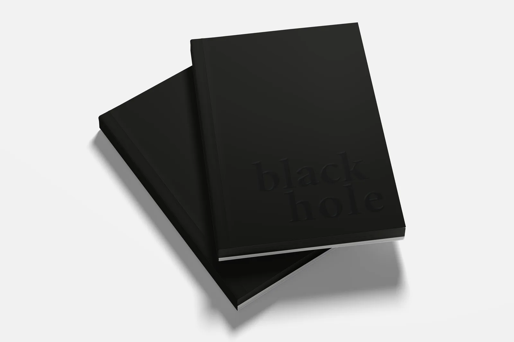
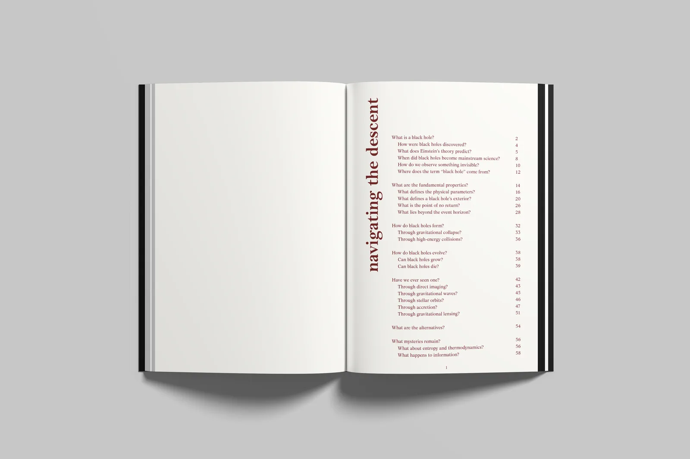
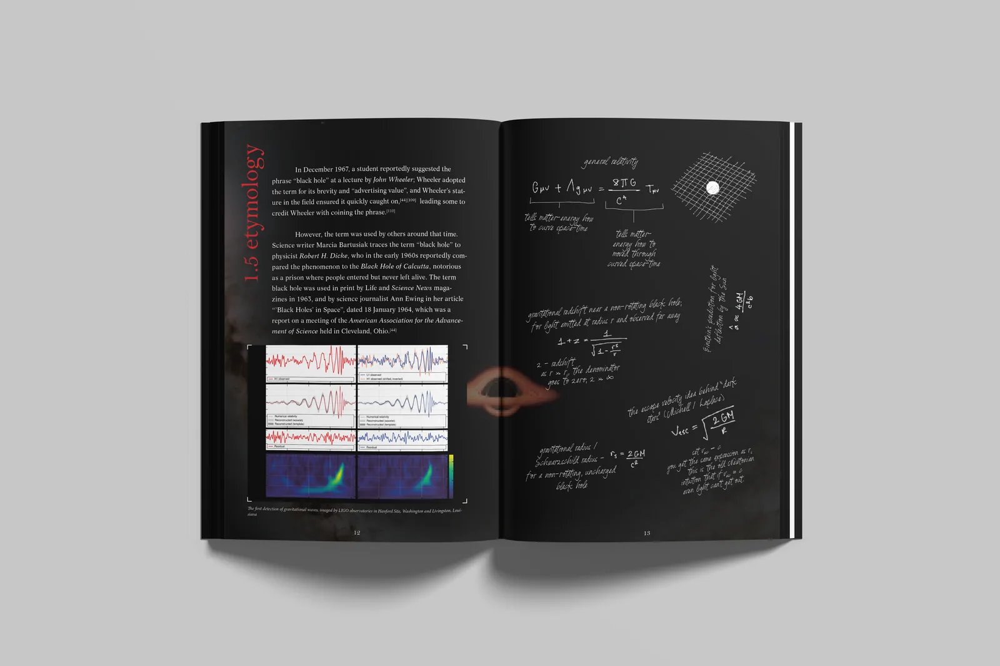
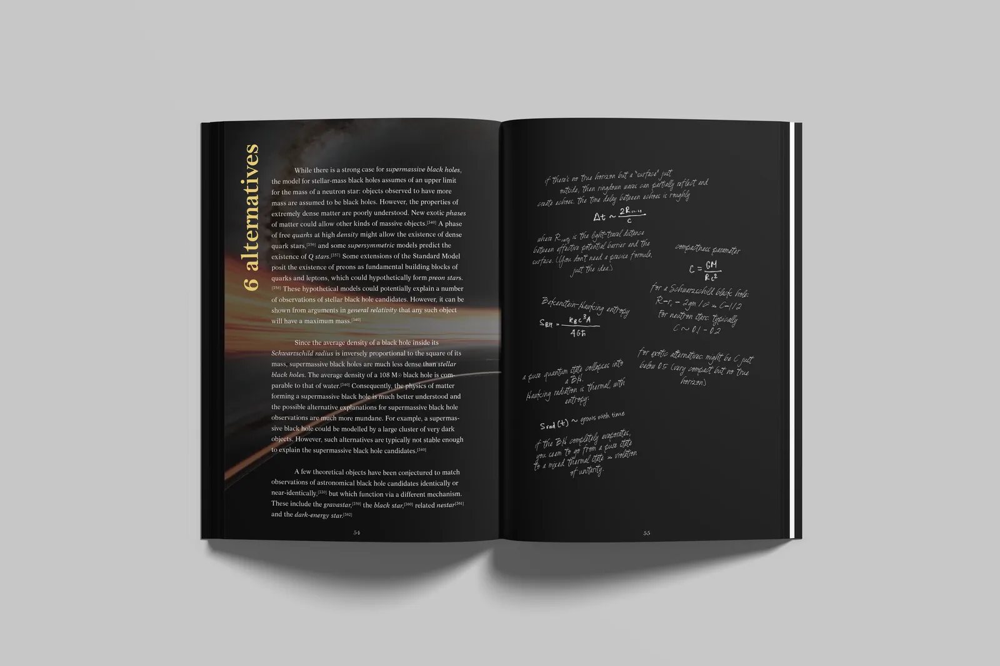
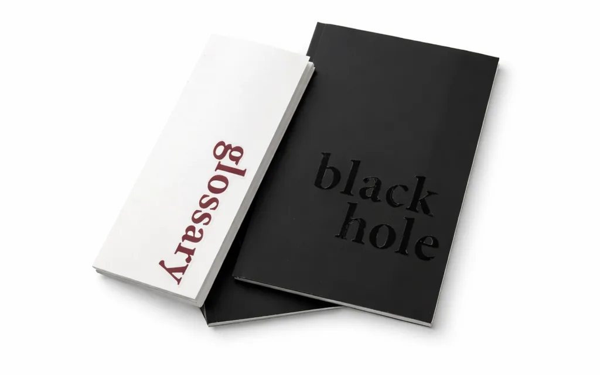

Print & Editorial
A Wikipedia article rebuilt as a printed book — designed as a single gradual descent, where every spread pulls the reader further in.

A Wikipedia article set as a printed book, thinking about how typography, layout and imagery shape the way something is read. I chose black holes because the subject already carries scale and mystery, and I wanted to see whether design could reflect an idea rather than only organise it.
It opens with a bright white index that asks questions instead of listing chapters — navigating the descent. From there the book moves into full-bleed black pages with images running across every one, and never comes back up. New topics open on a wide single column before dropping into two narrower ones, so the measure tightens as the reader goes deeper.



Terms set in italics are carried into a separate glossary booklet, so a definition never interrupts the flow of a page. The references and notes return to white at the end, closing the descent where it started. The cover is matte black with a glossy black title that only appears when light hits it.
In hand
The glossary booklet sits alongside the book, white against matte black — the only place the descent lets up.

Credits — Source text from the Wikipedia article “Black hole,” CC BY-SA. Design, typesetting and photography: Tanaya Agarwal.